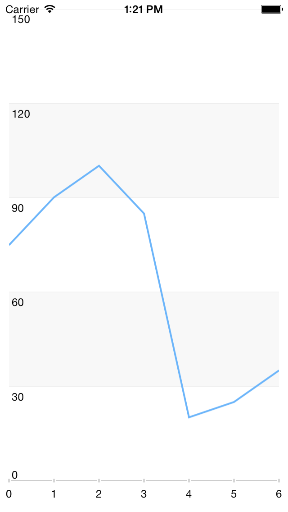

DataSource: Populating with Data
TKDataSource can consume data coming from various sources.

The simplest way to load data in TKDataSource is to use an array with numbers or strings:
Objective-C
TKDataSource *dataSource = [TKDataSource new];
dataSource.itemSource = @[ @"apple", @"bannana", @"orange", @"cherry" ];
Swift
let dataSource = TKDataSource()
dataSource.itemSource = [ "apple", "bannana", "orange", "cherry" ]
It also supports arrays of business objects. In this scenario you can use displayKey and valueKey properties to define how to present the data:
Objective-C
@interface DataSourceItem : NSObject
@property (nonatomic, copy) NSString *name;
@property (nonatomic, copy) NSString *content;
@property (nonatomic) CGFloat value;
@end
//...
NSMutableArray *items = [NSMutableArray new];
[items addObject:[[DataSourceItem alloc] initWithName:@"John" value:50]];
[items addObject:[[DataSourceItem alloc] initWithName:@"Abby" value:33]];
[items addObject:[[DataSourceItem alloc] initWithName:@"Smith" value:42]];
[items addObject:[[DataSourceItem alloc] initWithName:@"Peter" value:28]];
[items addObject:[[DataSourceItem alloc] initWithName:@"Paula" value:25]];
TKDataSource *dataSource = [TKDataSource new];
dataSource.itemSource = items;
dataSource.displayKey = @"name";
dataSource.valueKey = @"value";
[dataSource enumerate:^(id item) {
NSLog(@"%@", [dataSource textFromItem:item inGroup:nil]);
}];
Swift
class DataSourceItem: NSObject
{
var name:String = ""
var content:String = ""
var value:Float = 0
init(name: String, value: Float) {
self.name = name
self.value = value
}
}
//...
var items = [DataSourceItem]()
items.append(DataSourceItem(name: "John", value: 50))
items.append(DataSourceItem(name: "Abby", value: 33))
items.append(DataSourceItem(name: "Smith", value: 42))
items.append(DataSourceItem(name: "Peter", value: 28))
items.append(DataSourceItem(name: "Paula", value: 25))
let dataSource = TKDataSource()
dataSource.itemSource = items
dataSource.displayKey = "name"
dataSource.valueKey = "value"
dataSource.enumerate { (DataSourceItem item) -> Void in
println(dataSource.textFromItem(item, inGroup: nil))
}
If a greater precision is necessary, you can implement the formatText block to define how the data will be presented:
Objective-C
[dataSource formatText:^NSString *(id item, TKDataSourceGroup *group) {
DataSourceItem *dsItem = (DataSourceItem*)item;
return [NSString stringWithFormat:@"%@ has %f points", dsItem.name, dsItem.value];
}];
Swift
dataSource.formatText { (AnyObject item, TKDataSourceGroup group) -> String! in
let dsItem = item as! DataSourceItem
return "\(dsItem.name) has \(dsItem.value) points"
}
When using NSDictionary as a data provider for TKDataSource, its items property contains the keys collection of the dictionary and the itemSource property contains the dictionary itself. The following code manipulates the dictionary by applying sorting and filtering methods and then presents the data:
Objective-C
NSDictionary *dict = @{ @"John": @50, @"Abby": @33, @"Smith": @42, @"Peter": @28, @"Paula": @25 };
TKDataSource *dataSource = [[TKDataSource alloc] initWithItemSource:dict];
[dataSource sortWithKey:@"" ascending:YES];
[dataSource filter:^BOOL(id item) {
return [dict[item] intValue] > 30;
}];
Swift
let dictionary:NSDictionary = [ "John": 50, "Abby": 33, "Smith": 42, "Peter": 28, "Paula": 25 ]
let dataSource = TKDataSource(itemSource: dictionary)
dataSource.sortWithKey("", ascending: true)
dataSource.filter { (String name) -> Bool in
return (dictionary.objectForKey(name) as! Int) > 30
}
TKDataSource is handy when loading data from resources. With a simple method call it loads a JSON formatted file, parses its data and is ready to present or shape the data:
Objective-C
TKDataSource *dataSource = [TKDataSource new];
[dataSource loadDataFromJSONResource:@"PhotosWithNames" ofType:@"json" rootItemKeyPath:@"photos"];
Swift
let dataSource = TKDataSource()
dataSource.loadDataFromJSONResource("PhotosWithNames", ofType: "json", rootItemKeyPath: "photos")
It can load also data coming from a web service. The following code downloads a JSON formatted data from a web service, groups its items and presents the result in TKChart:
Objective-C
TKChart *chart = [[TKChart alloc] initWithFrame:self.view.bounds];
chart.autoresizingMask = UIViewAutoresizingFlexibleWidth | UIViewAutoresizingFlexibleHeight;
[self.view addSubview:chart];
self.dataSource = [TKDataSource new];
NSString *url = @"http://www.telerik.com/docs/default-source/ui-for-ios/weather.json?sfvrsn=2";
[self.dataSource loadDataFromURL:url dataFormat:TKDataSourceDataFormatJSON rootItemKeyPath:@"dayList" completion:^(NSError *error) {
if (error) {
NSLog(@"Can't connect with the server");
return;
}
self.dataSource.valueKey = @"humidity";
chart.dataSource = dataSource;
}];
Swift
let chart = TKChart(frame:self.view.bounds)
chart.autoresizingMask = UIViewAutoresizing.FlexibleWidth | UIViewAutoresizing.FlexibleHeight
self.view.addSubview(chart)
self.dataSource = TKDataSource()
let url = "http://www.telerik.com/docs/default-source/ui-for-ios/weather.json?sfvrsn=2"
self.dataSource?.loadDataFromURL(url, dataFormat: TKDataSourceDataFormat.JSON, rootItemKeyPath: "dayList", completion: { (NSError err) -> Void in
if err != nil {
println("Can't connect with the server")
return
}
self.dataSource?.valueKey = "humidity"
chart.dataSource = self.dataSource
})